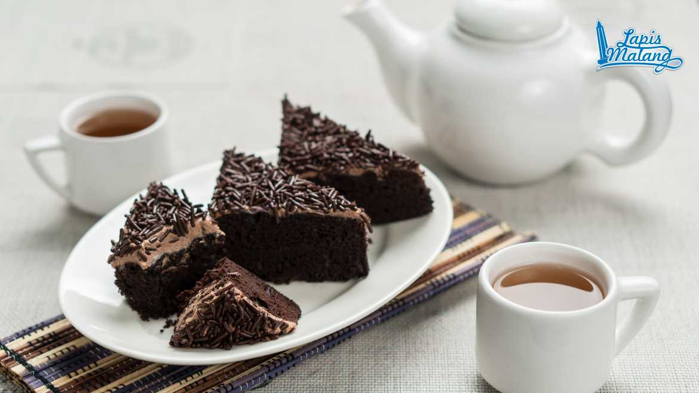
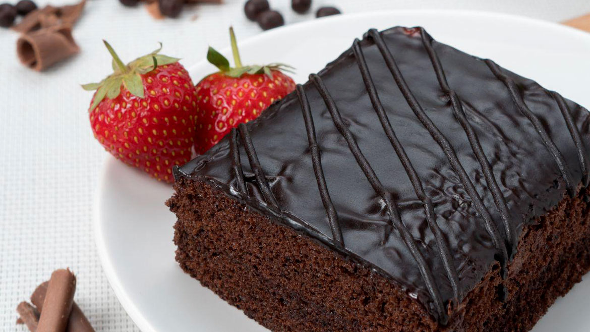
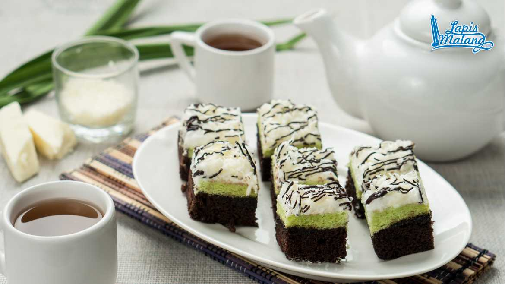
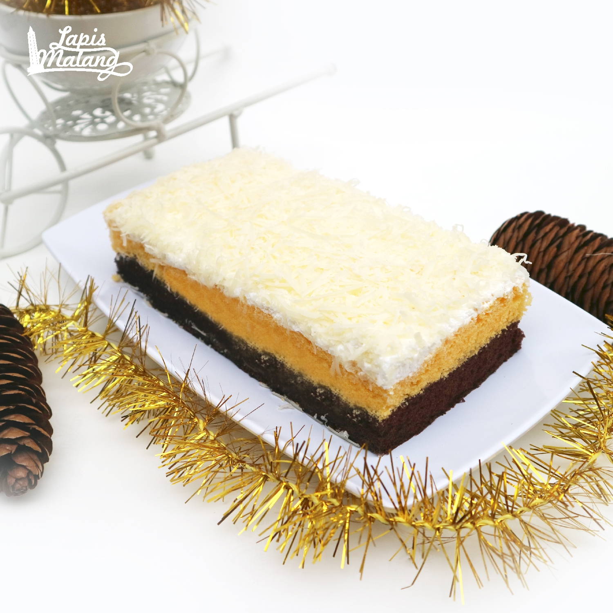
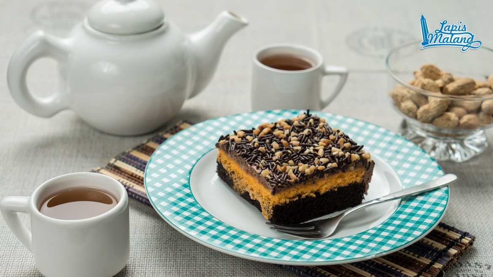

Original
Terbuat dari tepung, coklat bubuk, telur, meises serta gula, Lapis Malang
rasa original dilengkapi dengan filling chocolate butter cream yang gurih dan
manis serta toping meises yang renyah akan menciptakan rasa unik dilidah anda.

Choco Holic
Cake coklat lembut dengan topping cokelat glaze dan selai strawberry yang
dibuat dengan cita rasa yang pas, bisa menjadi produk terfavorit para penggemar cokelat.

Pandan
Aroma wanginya pandan tentu tidak akan gagal dalam menyedapkan berbagai masakan.
Maka dari itulah rasa pandan akan menjadi favorit anda dan keluarga setelah diolah
dengan komposisi yang pas.

Cheese
Perpaduan antara kue cokelat dan kue keju yang lembut dengan sensasi manis dan gurih,
serta topping parutan keju melimpah, sangat cocok bagi anda yang ingin menikmati kue keju
dengan sensasi yang berbeda.

Choco Peanut
Remahan kacang bercampur coklat yang menjadi toping kue Lapis Malang rasa choco peanut
dengan filling choco butter cream yang manisnya diolah sesuai dengan cita rasa yang pas,
akan menjadi favorit Anda para penggemar coklat.